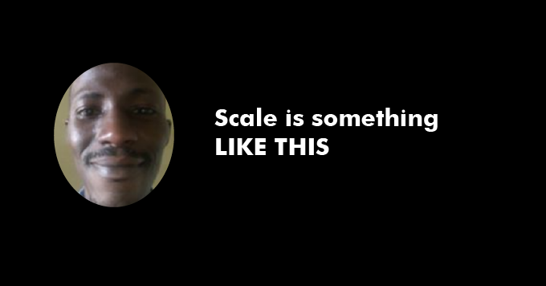

Scale is something like THIS


What scale is? something extensible which grows fastly. Better if it needs no inputs for going up and up again.
Scale is this “graale” that marketers and entrepreneurs dream about and hustle for getting it.
Scale is quantitative…….. it is your daily acquired customers or users. It is your number of referred customers or users. It is your low churn rate. Your daily active Users DAU or daily Active Customer.
Scale is in fact nothing of that. It is just how passionate people will be talking about you, your company, your services our your products. Scale is about people being always happy and eager to talk about you, your ……….
Scale is something like THIS
or someone like THIS